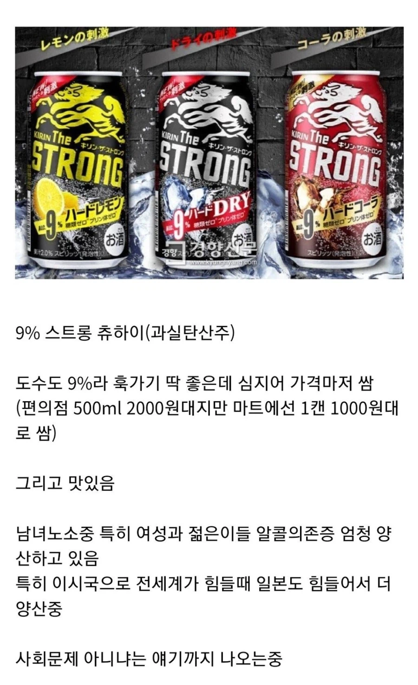
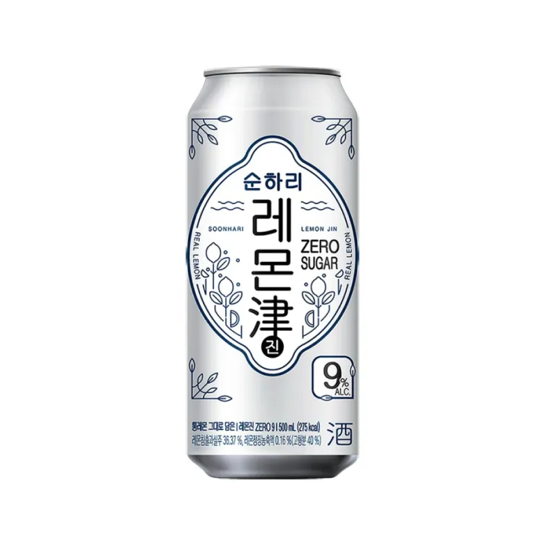

한국은 비슷한거 있어도 줄어드는데
술이 문제인가 사회가 문제인가 뭐가 문제인가


한국은 비슷한거 있어도 줄어드는데
술이 문제인가 사회가 문제인가 뭐가 문제인가
머기업들이 회식비 풀지 않으면 술소비는 다시 늘지 않을것이며, 사람들이 한 번 길들여지면 다시는 바꾸기 힘들어짐. 그리고 기업들이 회식비 안 풀 가능성 매우 높음.
그거때문인지 담달부터 발포주 줘패는김에 쟤들도 같이 세금 올린다더라
순하리 저거 맛있떤뎅
ㅈㄴ 셔서 별로던데

나 술 진찌 안마시는데 저건 갠찮던데
스트롱 츄하이 저런건 당도 좆되게 들어있겠지??
제로임. 알콜에 함유된 칼로리 빼고 칼로리가 없음.
스트롱제로의 제로가 당류,퓨린 제로라 스트롱제로임. 저 사진은 스트롱제로는 아니고 다른회사에서 만든 유사품인데 저런 스트롱류는 대부분 그럼.
밑에 순하리 9도짜리도 마찬가지. 탄수화물 지방 0이라 써있음
보통 대체당쓰긴함
외국에서 팔리는 소주도 다 과일소주인데 한국은 오리지날 소주 장악력 때문인가 편의점에 주정에 감미료랑 향으로 맛낸 애들도 여럿 내는데 막 시장에 올라오는 느낌은 아닌듯?
걔들 숙취 경험해본 사람들은 다들 소주로 회귀하기 때문
펩제를 마시면 되는것 아닌가?
가격문제 아님?
알콜 중독 걱정없는 고숙성 위스키를 즐기란 말이야
일본도 젊은 세대 주류 소비량은 꾸준히 감소하는데 저것때문인지는 몰라도 폭음하는 사람은 늘어나는 현상이 일어난다고는 하더라
나는 호로요이 요구르트 맛이 그렇게 맛있더라 ㅋㅋ
우리나라도 관련제품 계속 늘어나는거보면 소주는 안마셔도 저런거 판매량 ㅈㄴ늘어나는듯?‘ 최근에 9도 10도짜리 엄청 출시됨
난 써머스비도 끝에 쓴맛 느껴져서 포기했는데
이거 과일소주보다 더 위험하겠더라. 쓴 맛이 없으니 물처럼 넘어가고 그러다 훅감
스트롱제로 존나 맛있더라ㅋㅋ
국내 카피 제품들 먹어보고
맛은 절반 가격은 두배라 놀랐음
난 저런 하이볼류 보다 위스키 고량주 같은 하이볼이나 독일맥주같은걸 더 선호함
순하리는 비싸잖아
가격차이임 주세 최적화로 만든술이라 500캔 하나에 1500원정도
아니 한국 츄하이 같은 건 일본에 비해 맛대가리가 없잖아. 일본꺼 따라하려고 해서 그런가 개성도 없고
한국에선 소주가 달잖아~~~
순하리가 천원대가 아니잖아
한국꺼는 맛대가리가없음
순하리 레몬진은 맛없고 스트롱제로는 맛있음 그게 문제임